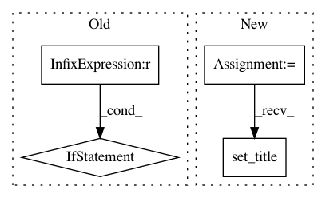

238dcd48412361f669bc41ee48995266ac168ee8,beginner_source/transfer_learning_tutorial.py,,visualize_model,#Any#Any#,238
Before Change
imshow(inputs.cpu().data[0],
title="pred: {}".format(dset_classes[labels.data[0]]))
if i == num_images - 1:
break
////////////////////////////////////////////////////////////////////////////////////////////////////////////////////////////////////////////
// Finetuning the convnet
// ----------------------
//
// Load a pretrained model and reset final fully connected layer.
//
model_ft = models.resnet18(pretrained=True)
num_ftrs = model_ft.fc.in_features
model_ft.fc = nn.Linear(num_ftrs, 2)
After Change
for j in range(inputs.size()[0]):
images_so_far += 1
ax = plt.subplot(num_images//2, 2, images_so_far)
ax.axis("off")
ax.set_title("predicted: {}".format(dset_classes[labels.data[j]]))
imshow(inputs.cpu().data[j])
if images_so_far == num_images:
return
In pattern: SUPERPATTERN
Frequency: 3
Non-data size: 4
Instances
Project Name: pytorch/tutorials
Commit Name: 238dcd48412361f669bc41ee48995266ac168ee8
Time: 2017-04-11
Author: sasankchilamkurthy@gmail.com
File Name: beginner_source/transfer_learning_tutorial.py
Class Name:
Method Name: visualize_model
Project Name: analysiscenter/batchflow
Commit Name: 29f852d88e32f616437a6ca5cf6f886680523ede
Time: 2019-10-31
Author: 7520522+a-arefina@users.noreply.github.com
File Name: batchflow/utils.py
Class Name:
Method Name: plot_results_by_config
Project Name: kundajelab/dragonn
Commit Name: 38512d92a8682a62e73c5b9e86366888be374532
Time: 2019-05-29
Author: annashcherbina@gmail.com
File Name: dragonn/vis/__init__.py
Class Name:
Method Name: plot_motif_scores